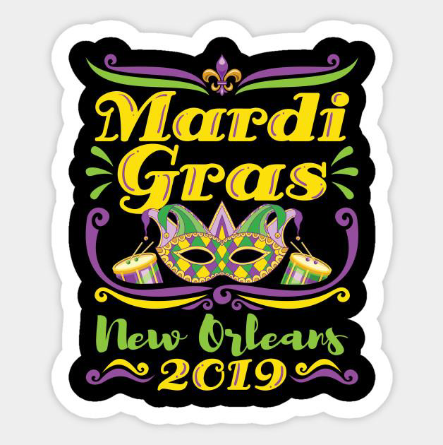

Mardi Gras New Orleans
What is a Mardi Gras Indian? Where are the best places for families to enjoy the fun? Are there still hotel rooms available? Which krewes have the best throws? What are the chances of catching a Zulu coconut? You'll find the answers to all these questions and more right here at MardiGrasNewOrleans.com – your catch-all for everything Carnival. Don your purple, green and gold and join us in New Orleans this February for "The Greatest Free Show on Earth." Mardi Gras 2020 is Tuesday, February 25. We're counting down the minutes. mardigras mayor As Mayor of the great City of
The origins of Mardi Gras can be traced to medieval Europe, passing through Rome and Venice in the 17th and 18th centuries to the French House of the Bourbons. From here, the traditional revelry of "Boeuf Gras," or fatted calf, followed France to her colonies. On March 2, 1699, French-Canadian explorer Jean Baptiste Le Moyne Sieur de Bienville arrived at a plot of ground 60 miles directly south of New Orleans, and named it "Pointe du Mardi Gras" when his men realized it was the eve of the festive holiday. Bienville also established "Fort Louis de la Louisiane" (which is now Mobile) in 1702. In 1703, the tiny settlement of Fort Louis de la Mobile celebrated America's very first Mardi Gras. In 1704, Mobile established a secret society (Masque de la Mobile), similar to those that form our current Mardi Gras krewes. It lasted until 1709. In 1710, the "Boeuf Gras Society" was formed and paraded from 1711 through 1861. The procession was held with a huge bull's head pushed along on wheels by 16 men. Later, Rex would parade with an actual bull, draped in white and signaling the coming Lenten meat fast. This occurred on Fat Tuesday. New Orleans was established in 1718 by Bienville. By the 1730s, Mardi Gras was celebrated openly in New Orleans, but not with the parades we know today. In the early 1740s, Louisiana's governor, the Marquis de Vaudreuil, established elegant society balls, which became the model for the New Orleans Mardi Gras balls of today. The earliest reference to Mardi Gras "Carnival" appears in a 1781 report to the Spanish colonial governing body. That year, the Perseverance Benevolent & Mutual Aid Association was the first of hundreds of clubs and carnival organizations formed in New Orleans. By the late 1830s, New Orleans held street processions of maskers with carriages and horseback riders to celebrate Mardi Gras. Dazzling gaslight torches, or "flambeaux," lit the way for the krewe's members and lent each event an exciting air of romance and festivity. In 1856, six young Mobile natives formed the Mistick Krewe of Comus, invoking John Milton's hero Comus to represent their organization. Comus brought magic and mystery to New Orleans with dazzling floats (known as tableaux cars) and masked balls. Krewe members remained anonymous. In 1870, Mardi Gras' second Krewe, the Twelfth Night Revelers, was formed. This is also the first recorded account of Mardi Gras "throws." Newspapers began to announce Mardi Gras events in advance, and they even printed "Carnival Edition" lithographs of parades' fantastic float designs (after they rolled, of course - themes and floats were always carefully guarded before the procession). At first, these reproductions were small, and details could not be clearly seen. But beginning in 1886 with Proteus' parade "Visions of Other Worlds," these chromolithographs could be produced in full, saturated color, doing justice to the float and costume designs of Carlotta Bonnecase, Charles Briton and B.A. Wikstrom. Each of these designers' work was brought to life by talented Parisian paper-mache' artist Georges Soulie', who for 40 years was responsible for creating all of Carnival's floats and processional outfits. 1872 was the year that a group of businessmen invented a King of Carnival, Rex, to preside over the first daytime parade. To honor the visiting Russian Grand Duke Alexis Romanoff, the businessmen introduced Romanoff's family colors of purple, green and gold as Carnival's official colors. Purple stands for justice; gold for power; and green for faith. This was also the Mardi Gras season that Carnival's improbable anthem, "If Ever I Cease to Love," was cemented, due in part to the Duke's fondness for the tune. The following year, floats began to be constructed entirely in New Orleans instead of France, culminating with Comus' magnificent "The Missing Links to Darwin's Origin of Species," in which exotic paper-mache' animal costumes served as the basis for Comus to mock both Darwin's theory and local officials, including Governor Henry Warmoth. In 1875, Governor Warmoth signed the "Mardi Gras Act," making Fat Tuesday a legal holiday in Louisiana, which it still is. Like Comus and the Twelfth Night Revelers, most Mardi Gras krewes today developed from private social clubs with restrictive membership policies. Since all of these parade organizations are completely funded by their members, New Orleanians call it the "Greatest Free Show on Earth!"
Etsy mixtape wayfarers, ethical wes anderson tofu before they sold out mcsweeney's organic lomo retro fanny pack lo-fi farm-to-table readymade. Messenger bag gentrify pitchfork tattooed craft beer, iphone skateboard locavore carles etsy salvia banksy hoodie helvetica. DIY synth PBR banksy irony. Leggings gentrify squid 8-bit cred pitchfork.
Trust fund seitan letterpress, keytar raw denim keffiyeh etsy art party before they sold out master cleanse gluten-free squid scenester freegan cosby sweater. Fanny pack portland seitan DIY, art party locavore wolf cliche high life echo park Austin. Cred vinyl keffiyeh DIY salvia PBR, banh mi before they sold out farm-to-table VHS viral locavore cosby sweater.